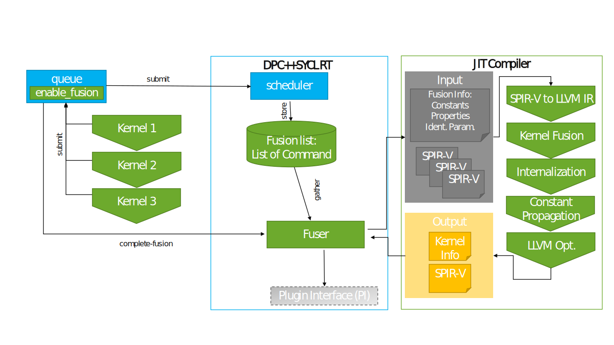
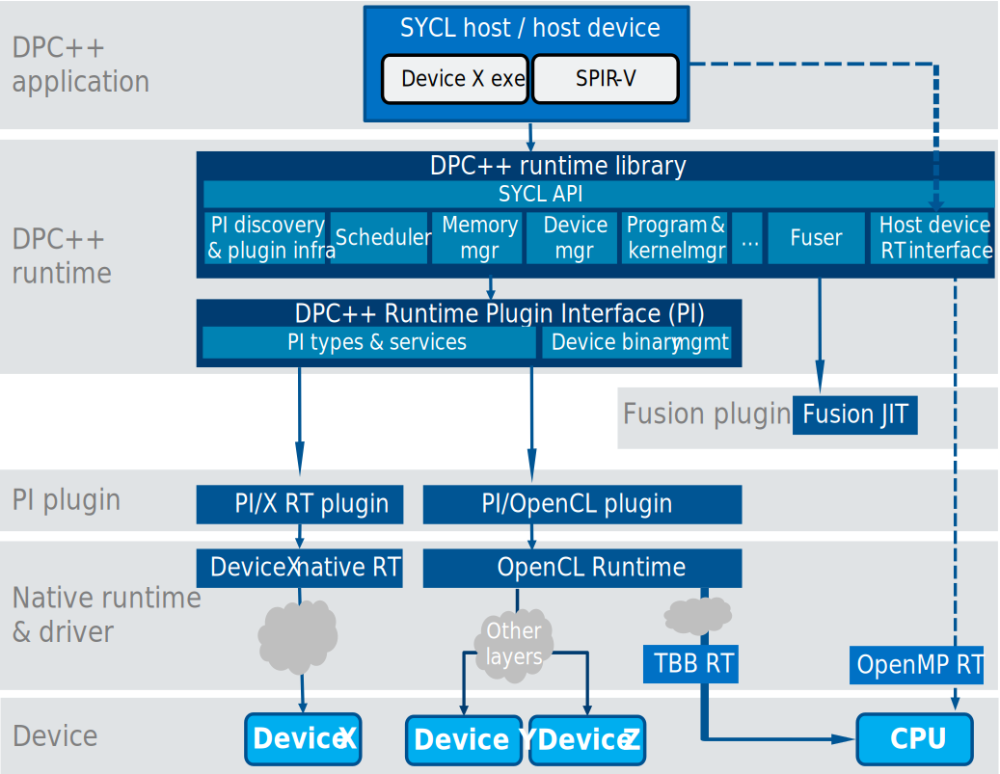

User driven Kernel Fusion¶
Context¶
To support the user driven kernel fusion extension (a presentation can be found here).
The basic workflow is shown in the diagram below

During the SYCL program execution, kernels to be fused are collected in a list in the queue (see Scheduler Integration section). When the fusion of kernels is requested, the SPIR-V modules containing them are passed to the JIT that will perform the fusion process (see Fusion Process). The fusion JIT will generate a new entry point containing all kernels to fuse and run the optimization pipeline. The result is a new SPIR-V module that is injected back into the SYCL runtime for execution.
The feature is a pure runtime process, no action at compile time is required at the moment.
Fusion JIT integration¶

The JIT is integrated into the SYCL runtime via a companion library to libsycl.so (Fusion plugin box).
The runtime communicates with the JIT via 2 main entry points: a context object (JITContext) and a fuseKernels function.
Scheduler Integration¶
Tasks¶
The integration of kernel fusion into the scheduling process needs to fulfill three main tasks:
Maintain the list of kernels submitted for fusion (the fusion list) for each queue.
Make sure that the kernel(s) submitted at the end of the fusion process, i.e., either the individual kernels (in case fusion is aborted or
cancel_fusionis called) or the fused kernel (in case ofcomplete_fusion), have the correct requirements & dependencies.Synchronization - the extension proposal outlines a number of scenarios in which kernel fusion must be aborted early for synchronization and to avoid circular dependencies in the SYCL RT execution graph.
To achieve these tasks, the command graph gained a new command node (KernelFusionCommand) and the behavior of the queue is modified accordingly.
KernelFusionCommand¶
A part of the necessary functionality is implemented as part of a new KernelFusionCommand as a sub-class of the Command class. This class fulfills two of the tasks listed above, as it maintains the fusion list for a queue (1) and allows the detection of scenarios in the scheduler where synchronization is necessary (3), as set out by the kernel fusion extension proposal.
For each queue for which start_fusion has been called, the GraphBuilder maintains one KernelFusionCommand in a map, with the map key being the unique numeric ID introduced for each queue_impl.
The execution of the KernelFusionCommand (enqueueImp) is similar to the EmptyCommand, as it simply waits for all its dependencies and then completes.
Behavior on queue::ext_codeplay_start_fusion¶
On a call to ext_codeplay_start_fusion, a new KernelFusionCommand with status ACTIVE is created and inserted into the map maintained by the GraphBuilder, effectively putting the queue into fusion mode.
If a previous KernelFusionCommand for this queue is still present, its status is now set to DELETE and it is processed for clean-up (more details on why this is necessary can be found in the section on event handling).
Behavior on queue::submit¶
If the queue is not in fusion mode, the behavior of this call remains unchanged. In case the submitted command is not a device kernel, the synchronization rules detailed below and in the kernel fusion extension proposal apply.
In all other cases, the kernel is added to the graph as usual, setting up the necessary dependency edges for all requirements, adding the kernel to the leaves of the memory records, and connecting event dependencies specified for the kernel. However, in contrast to the regular process, the kernel command and potential auxiliary commands (e.g., connection commands for event dependencies across different contexts) are not passed to the GraphProcessor for enqueueing right away, but rather stored in the fusion list of the KernelFusionCommand. Also, an event dependency between the KernelFusionCommand and the newly added kernel command is added to the graph.
Behavior on queue::ext_codeplay_cancel_fusion¶
If the queue is not in fusion mode, a warning is printed if SYCL_RT_WARNING_LEVEL is set to 1 otherwise nothing needs to be done.
Otherwise, as the individual kernels which need to be executed after ext_codeplay_cancel_fusion are already correctly added to the graph with all their requirements and event dependencies, the process for ext_codeplay_cancel_fusion is comparably simple: The fusion command’s status is changed to CANCELLED and the fusion command, all the kernels in the fusion list and all the auxiliary commands associated with them are enqueued to the GraphProcessor.
Behavior on queue::ext_codeplay_complete_fusion¶
If the queue is not in fusion mode (this might be due to an earlier cancellation on a synchronization event, see section on synchronization), ext_codeplay_complete_fusion still needs to return a valid event. More details on how this case is handled can be found in the section on event handling.
If the queue is still in fusion mode, the GraphBuilder will call into the jit_compiler to try and fuse the fusion list associated with the fusion command (but not the auxiliary commands) into a single command-group.
In case the fusion process in the JIT compiler fails, the fusion will be aborted by calling ext_codeplay_cancel_fusion, with the effects described in the corresponding section above.
If the fusion process completes successfully, the event dependencies of the kernels in the fusion list are filtered to remove any event dependencies that are internal to the fused kernel, i.e., dependencies from one kernel in the fusion list to another kernel in the fusion list.
After that, a new ExecCGCommand is constructed and placed in the graph instead of the individual kernels in the fusion list. This is implemented by first removing all the individual kernels from the graph, including their requirement and dependency edges, and restoring the leaves for all memory records that the individual kernels had requirements on. Now that the graph state is restored, the new fused kernel command can be added to the graph, using the union of the requirements and event dependencies of the individual kernels, to create all necessary requirements and dependency edges.
Additionally, an event dependency between the KernelFusionCommand and the fused kernel ExecCGCommand is added to the graph before all auxiliary commands.
The fused kernel and the KernelFusionCommand are eventually enqueued to the GraphProcessor.
The KernelFusionCommand status is set to COMPLETED.
Internalization Behavior¶
Users can provide hints to perform local and private promotion of arguments when performing fusion. On local promotion, arguments become local internal, meaning memory is shared between work-items of the same work-group. On the other hand, on private promotion, they become private internal, meaning memory is private to each work-item.
Local internalization is implemented by replacing the pointer to global memory corresponding to the argument to be promoted with a new argument being a pointer to local memory. The size of the local memory region will be original_size / num_work_groups, being original_size the number of elements in the accessor argument. Note that an ND-range kernel (parametrized by a sycl::nd_range) has to be used to perform local internalization.
Private internalization is implemented by dropping the pointer to global memory corresponding to the argument to be promoted and using a pointer to a private memory allocation instead. The size of the private memory allocation will be original_size / global_size. Note that a basic kernel (parametrized by a sycl::range) can be used to perform private internalization.
As the promoted address space will be potentially smaller than the original one, each access has to be remapped accordingly. Our current approach is to replace each access ptr + offset to ptr + offset % new_size. Users should be aware of this transformation and write their code carefully, making sure the resulting memory access pattern is legal and respects the original program semantics.
As kernel fusion supports fusing kernel with different ND-ranges, in some cases, internalization will be affected. For both local and private internalization, internalization when fusing kernels with different ND-ranges is allowed as long as the size of the memory allocations replacing the original argument are the same for all kernels using the argument to be promoted. Meaning:
For local internalization: all kernels specify a local size and
original_size / num_work_groupsis the same for all kernels;For private internalization:
original_size / global_sizeis the same for all kernels.
Synchronization Behavior¶
As described in the kernel fusion extension proposal, several scenarios require aborting the fusion early to avoid semantic violations or circular dependencies in the execution graph. Essentially, this affects all commands that do not become part of the fusion process, e.g., kernels on other queues, host tasks, or explicit memory operations, that have a dependency on at least one of the kernels in the current fusion list due to a requirement or event dependency.
The GraphProcessor is able to detect such scenarios. Independent of the actual command requiring synchronization, all execution paths end up enqueueing the command itself and/or its dependencies to GraphProcessor::enqueueCommand . This member function is responsible for detecting if any of the commands enqueued is associated with an active KernelFusionCommand. If that is the case, the enqueue process is paused and the fusion on the queue associated with the KernelFusionCommand is canceled, identical to an explicit call to queue::ext_codeplay_cancel_fusion as described above.
The detection at this stage is possible because even if the queue is in fusion mode, the individual kernels in the fusion list are added to the graph (and the leaves of memory records) such that other commands not part of the fusion process can correctly register them in their dependencies.
Special case treatment and earlier detection during graph-construction in the GraphBuilder are necessary for the case where commands submitted to one queue have requirements or dependencies on commands submitted to another queue in fusion mode.
If the fusion for a queue is aborted early, a warning can be printed to inform the user. This warning can be enabled by setting the environment variable SYCL_RT_WARNING_LEVEL to a value of 1 or higher.
Event Handling¶
The calls to queue::submit as well as to queue::ext_codeplay_complete_fusion need to return an event to allow synchronization with the execution of submitted kernels or the fused kernel.
Returning the event associated with the individual kernels (ExecCGCommand) from queue::submit while in fusion mode would mean that these events become useless if the fusion mode is later on completed successfully because the individual kernels are removed from the graph and never executed in this case.
To overcome this problem, a call to queue::submit while in fusion mode will instead return the event associated with the KernelFusionCommand.
This event will always remain valid and allow for synchronization, independent of whether the fusion mode was terminated through early cancellation, ext_codeplay_cancel_fusion, or ext_codeplay_complete_fusion, as the KernelFusionCommand in all these scenarios has event dependencies on all relevant commands.
Another important scenario is a call to ext_codeplay_complete_fusion after the fusion for this queue has been aborted early (see section on Synchronization Behavior).
In this case, the individual kernels and the KernelFusionCommand could have been enqueued and even executed long ago, but the call to ext_codeplay_complete_fusion still needs to return a valid event for synchronization.
To handle this case, the KernelFusionCommand for each queue remains in the fusion map until the next ext_codeplay_start_fusion on the same queue and does not undergo the cleanup process until its status has been set to DELETE by ext_codeplay_start_fusion.
This way, the lifetime of the event associated with the KernelFusionCommand is extended such that it is still valid for synchronization when returned from a later call to ext_codeplay_complete_fusion.
Note that even though the KernelFusionCommand is associated with a particular queue and context, the associated event does not have an underlying PI event, i.e., it is essentially a host event.
Fusion Process¶
To fuse kernels, a small LLVM based JIT compiler (later just JIT for brevity) is responsible to perform the following tasks:
Load input modules in LLVM IR format (translate SPIR-V module to LLVM IR for now)
Fuse kernels in a new module
Perform fusion specific optimization
Finalize for the target (emit SPIR-V module for now)
The pipeline is triggered by the SYCL runtime by calling the fuseKernels function and its result is then injected into the runtime as a kernel bundle.
The fusion specific optimization is composed of new LLVM passes we wrote for this task.
The rest of the code is just plumbing code to build the pipeline. The SPIR-V loading and emission are done by the LLVM-SPIRV-Translator.
Kernel fusion pipeline¶
The kernel fusion process is triggered by the fuseKernels function from the fusion JIT module.
It takes as parameters the information required for the fusion: a context, a list of information about kernels to be fused, an ordered list of kernels to fuse (the same kernel may appear more than once), the name of the fused kernel, a list of identical parameters, and a list of buffers to promote to private or local memory and constant from the runtime to inject into the module.
The function creates a new LLVM module with a stub function that will become the fused kernel and adds the kernels to fuse and their dependencies into this module. In the case the original module is SPIR-V, the module is first translated to LLVM IR and then added to the module. Information about the fusion is registered within the module by attaching metadata to the stub function (see section Passing information to the fusion pipeline) and runs the fusion and optimization pipeline.
The pipeline currently consists of the following passes (in order):
SYCLKernelFusionperforms the actual fusion process by inlining kernels to fuse inside the fused kernel. In case not all kernels being fused share the same nd-range, it also handles work-items remapping (see)Generic optimization passes:
IndVarSimplifyPass,LoopUnrollPass,SROAPass,InferAddressSpacesPassto remove pointers to the generic address-spaceThese optimizations are important to help the internalizer, see note below.
SYCLInternalizerpromotes buffer to local or private memorySYCLCPpropagates runtime information as constant in the kernelGeneric optimization passes post-fusion:
SROAPass,SCCPPass,InstCombinePass,SimplifyCFGPass,SROAPass,InstCombinePass,SimplifyCFGPass,ADCEPass,EarlyCSEPass
Note: ideally the InferAddressSpacesPass task should be done by the static compiler.
However, to help the inference and (in fine) the internalizer passes in general, we need to run optimizations more aggressively than the static currently does.
The main barrier that could prevent the internalization of buffers is the presence of generic pointers.
As we need to change a pointer to generic to a pointer to private / local, if it is casted to generic we need to ensure that any casts back
to global can be safely changed to the proper address space.
A more precise inference pass and memory analysis will be required to lift this workaround.
Once the pipeline is finished, the module is translated into a SPIR-V module and encapsulated into a SYCLKernelInfo object containing metadata required for its injection into the runtime.
Passing information to the fusion pipeline¶
Most of the information passed from the runtime into the JIT is stored as metadata inside the LLVM module the JIT creates. This eases lit testing as all the information is self-contained in the module.
The metadata is attached to a function that will become the fused kernel:
sycl.kernel.fused: declare the kernels to fuse. Contains a list of kernel names to fuse.sycl.kernel.param: declare identical parameters. Contains a list of tuples, each tuple represents identical arguments and each element of that tuple contains a pair of indexes referencing the kernel index insycl.kernel.fusedand the parameter index of that kernel (0 indexed). For instance ((0,1),(2,3)) means the second argument of the first kernel is identical to the fourth argument of the third kernel.sycl.kernel.promote: declare identical parameters to be promoted. Contains a list of strings specifying promotion hints for each argument:nonefor no promotion andlocal/privatefor local/private promotion.sycl.kernel.promote.localsize: declare the address space size for the promoted memory. Contains a list specifying the number of elements in the replacement memory allocation for each argument or""when no promotion needs to be performed.sycl.kernel.promote.elemsize: declare the element size for the promoted memory. Contains a list specifying the element size for each promoted argument or""when no promotion needs to be performed.sycl.kernel.constants: declare the value of a scalar or aggregate to be used as constant values. Contains a list of indexes (of the fused kernel, after identical arguments elision) and the value as a string. Note: the string is used to store the value, the string is read as a buffer of char and reinterpreted into the value of the argument’s type.sycl.kernel.nd-range: declare the nd-range to be used by the fused kernel in case work-item remapping was needed. It is a tuple with 4 elements:num_dims: scalar integer representing the number of dimensions of the nd-range;global_size: triple representing nd-range global size, an element for each dimension, using0for unused dimensions;local_size: triple representing nd-range local size, an element for each dimension, using0for unused dimensions. If the local size is not specified, all elements will be 0;offset: triple representing nd-range offset, an element for each dimension, using0for unused dimensions.
sycl.kernel.nd-ranges: declare the nd-ranges of each original kernels. This information is used by theSYCLKernelFusonpass to perform work-item remapping. It is a list with references to tuples as the one contained insycl.kernel.nd-range. Constraints on the legal combinations of nd-ranges are described in the corresponding section.
Fusing kernels with different nd-ranges¶
This section explains actions performed by the kernel fusion JIT compiler when fusing kernels with different nd-ranges. Throughout this section, we refer to “work-item components”. A comprehensive list of these components mentioned in this document is:
global_sizelocal_sizenum_work_groupsglobal_idlocal_idgroup_idglobal_offset
The meaning of each of these is self-explainatory for the SYCL user.
Restrictions¶
Following kernel fusion principles, SYCL constraints and technical decisions, some basic constraints are set for valid combinations of nd-ranges:
The fused kernel should perform no more visible work than the union of the unfused kernels;
The fused kernel should perform no less visible work than the union of the unfused kernels;
If two work items belong to the same work-group in one of the unfused grids, they must also belong to the same work-group in the fused grid;
Either none or all of the work-items of a work-group must execute barriers inserted by the kernel fusion process;
The fused kernel must not launch more work-items than the maximum number of work-items launched by the original kernels.
All work-groups will be the same size, as per the SYCL 2020 rev 7. 3.9.4.
global_id(i) = group_id(i) * local_size(i) + local_id(i)as per OpenCL 3.0 3.2.1.A work-item will have the same global linear id in the fused grid as in the unfused grid;
All the fused nd-ranges must have the same offset.
These restrictions can be simplified to:
No two local sizes specified by the nd-ranges will be different;
No global id remapping is needed (see) or all input offsets are 0;
All the fused nd-ranges must have the same offset;
No global id remapping is needed for kernels specifying a local size.
As we can see, there is no restrictions in the number of dimensions or global sizes of the input nd-ranges.
Work-item remapping¶
Work-item remapping is performed at the input kernel level, i.e., a different remapping is performed for each input kernel, as different input nd-ranges will result in different remappings.
This remapping consists on an inter-procedural pass replacing each built-in querying components of a work-item, e.g., the global id or the local size, with a JIT-generated value.
First of all, work-item remapping will always be performed when the list of input nd-ranges is heterogeneous. Additional remapping conditions are present for the following work-item components. For each input kernel:
num_work_groupsandlocal_size: Only performed if the input nd-range has an explicit local size, may result in better performance, as this replaces built-in calls with constants;global_id: Only needed if the number of dimensions differ w.r.t. that of the fused kernel or any component of the global size in the range [2,num_dims] differs.local_idandgroup_id: Never needed as per kernel fusion restrictions. These are invariant after fusion.
Once this rules are set, also taking into account remapping constraints, the remapping is performed as follows for each input kernel:
global_id:global_id(0) = GLID / (global_size(1) * global_size(2))global_id(1) = (GLID / global_size(2)) % global_size(1)global_id(2) = GLID % global_size(2)
num_work_groups:num_work_groups(x) = global_size(x) / local_size(x)
global_size:global_size(x) = GS(x)
local_size:local_size(x) = LS(x)
global_offset:global_offset(x) = GO(x)
On the RHS of the expressions, component names refer to the remapped values and upper case GS, LS and GO values refer to each of the components of the original nd-range (global size, local size and global offset), whereas GLID refers to the global linear id, which is an invariant during the fusion process.
Special care needs to be taken when handling elements from the original nd-range, as the input index needs to be remapped to take into account different array subscript ordering of the underlying API w.r.t. SYCL. See SYCL 2020 rev. 7 C.7.7 for more information on this index remapping.
Note: As there is no global_id counterpart for PTX, global id is specified as global_id(i) = group_id(i) * local_size(i) + local_id(i) + global_offset(i). This way, when targetting PTX, local_size, local_id and group_id will need special treatment when no explicit local size is provided. In this particular case, remapping will take place as follows (also respecting original constraints):
num_work_groups:num_work_groups(x) = 1
group_id:group_id(x) = 0
local_size:local_size(x) = GS(x)
local_id:local_id(x) = global_id(x)
Remapped SPIR-V built-ins¶
Following OpenCL SPIR-V Environment Specification 3.0 2.9:
global_size:GlobalSizelocal_size:WorkgroupSizenum_work_groups:NumWorkgroupsglobal_id:GlobalInvocationIdlocal_id:LocalInvocationIdgroup_id:WorkgroupIdglobal_offset:GlobalOffset
Remapped PTX intrinsics¶
Following User Guide for NVPTX and Compiler and runtime design #global-offset-support.
local_id:llvm.nvvm.read.ptx.sreg.tid.*group_id:llvm.nvvm.read.ptx.sreg.ctaid.*local_size:llvm.nvvm.read.ptx.ntid.*num_work_groups:llvm.nvvm.read.ptx.nctaid.*global_offset:llvm.nvvm.implicit.offset
Support for non SPIR-V targets¶
Fusion is currently supported for the NVPTX/CUDA and HIP backend.
As this backend cannot ingest a SPIR-V module, additional changes to the compilation flow are necessary. During static compilation the LLVM module for this backend is stored in addition to the finalized binary.
This behavior is controlled by the -fsycl-embed-ir flag to avoid binary
inflation in case kernel fusion is not used. If users want to use kernel fusion
at runtime on the NVPTX/HIP backend, they need to pass the -fsycl-embed-ir
flag during static compilation.
During the fusion process at runtime, the JIT will load the LLVM IR and finalize the fused kernel to the final target. More information is available here.
Interaction with parallel_for range rounding¶
DPCPP’s range rounding transformation is transparent for fusion, meaning the generated wrapper kernel with the rounded up range will be used.
Private internalization is supported when fusing
such kernels. We use the original, unrounded global size in dimension 0 when
computing the private memory size. As range rounding only applies to basic
kernels (parametrized by a sycl::range), local internalization is not affected
by the range rounding transformation.
Reductions¶
Kernel fusion of reductions is partially supported. In order to preserve the legality of the fused kernel, i.e., the fact that fused kernel must perform the same work as the graph of kernels to be fused, only the fusion of the following reduction strategies is supported at the time of writing:
group_reduce_and_last_wg_detectionlocal_atomic_and_atomic_cross_wgrange_basicgroup_reduce_and_atomic_cross_wglocal_mem_tree_and_atomic_cross_wg
Other strategies require implicit inter-work-group synchronization, not supported in kernel fusion.
Users may encounters errors, e.g., fusion being aborted or incorrect results due
to race conditions or any other cause, when using the sycl::reduction
interface. The SYCL runtime will choose different algorithms depending on the
reduction operator, data type and hardware capabilities, so strategy selection
is not possible through the regular interface. In this case, users can instead
use sycl::detail::reduction_parallel_for, forcing a supported fusion
strategy. Reductions implementation in
sycl/reduction.hpp might give users an
insight into which kind of reductions to use for their purposes:
q.submit([&](sycl::handler &cgh) {
sycl::accessor in(dataBuf, cgh, sycl::read_only);
sycl::reduction sum(sumBuf, cgh, sycl::plus<>{});
// Force supported 'group_reduce_and_last_wg_detection' strategy
sycl::detail::reduction_parallel_for<sycl::detail::auto_name,
sycl::detail::strategy::group_reduce_and_last_wg_detection>(...);
});
Group Algorithms and Functions¶
Kernel fusion supports group algorithms and functions. As per remapping
rules, group ID and local ID are invariant after fusion
even when different ND-ranges are involved. This way, group functions and
algorithms conceptually executed for a given group and using a given local ID
as, e.g., the group_broadcast local ID, will keep semantics after fusion.
Unsupported SYCL constructs¶
The following SYCL API constructs are currently not officially supported for kernel fusion and should be considered untested/unsupported:
sycl::streamSpecialization constants and
sycl::kernel_handlerImages (
sycl::unsampled_imageandsycl::sampled_image)